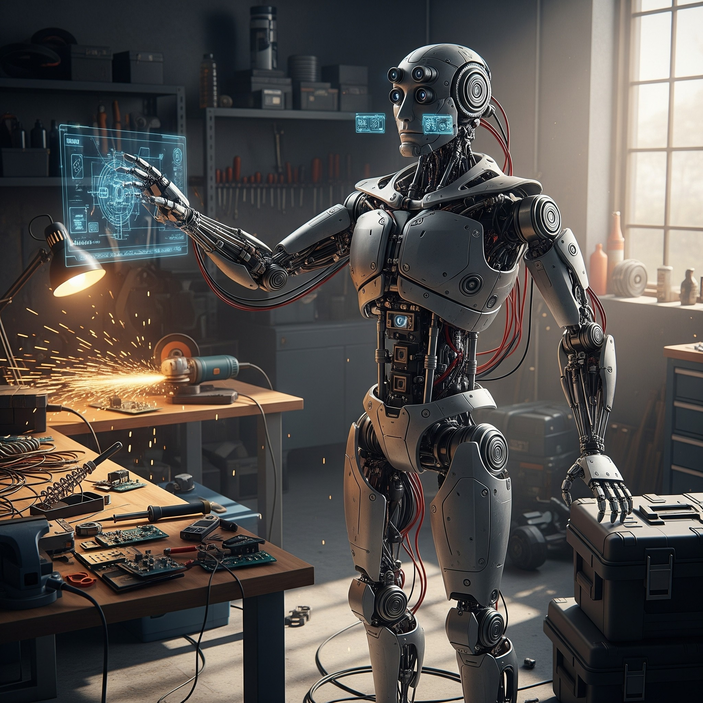

Introduction to Robotics
Robot

Karel Čapek
The word 'robot' was first introduced to the public by the Czech playwright Karel Čapek in his 1920 play R.U.R. (Rossum's Universal Robots). The term was derived from the Czech word robota, meaning "forced labor" or "servitude." In the play, the robots were artificial beings built to serve humans, a theme that has resonated through science fiction ever since.
While science fiction often portrays robots as anthropomorphic machines endowed with intelligence and personality, the engineering definition is more functional. The Robot Institute of America (RIA) provides a widely accepted definition:
"A robot is a reprogrammable, multifunctional manipulator designed to move material, parts, tools, or specialized devices through variable programmed motions for the performance of a variety of tasks."

The key elements in this definition are reprogrammability and versatility. Unlike fixed automation (or "hard automation"), which consists of custom-built machinery designed for a single, high-volume task, a robot can be repurposed for different tasks by changing its programming and end-effector (the tool at the end of its arm). This flexibility makes robotics a cornerstone of modern, agile manufacturing.
The Definition of Robotics
The term robotics was coined by the science fiction author Isaac Asimov in 1942. He famously formulated the "Three Laws of Robotics" as a set of ethical principles for robots to follow:
-
A robot may not injure a human being or, through inaction, allow a human being to come to harm.
-
A robot must obey the orders given it by human beings except where such orders would conflict with the First Law.
-
A robot must protect its own existence as long as such protection does not conflict with the First or Second Law.
While these laws remain in the realm of fiction, they underscore the concept of a machine designed to operate safely and predictably.
In an engineering context, robotics is the interdisciplinary science and technology of the design, construction, operation, and application of robots. It integrates knowledge from several fields:
-
Mechanical Engineering: Kinematics, dynamics, material science, and mechanism design.
-
Electrical Engineering: Electronics, control systems theory, actuators, and sensor design.
-
Computer Science: Programming, artificial intelligence, computer vision, and algorithm design.
At its core, robotics is the study of the intelligent connection between perception and action. A robot senses its environment, plans a course of action based on that sensory input and its programmed goals, and then acts upon the environment.